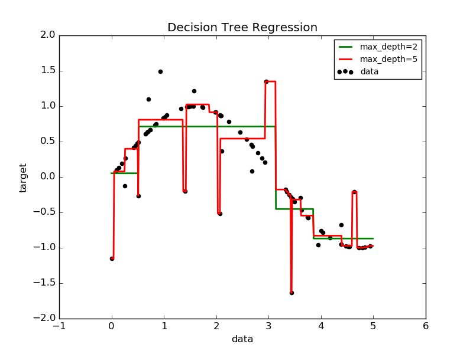

决策树Decision Trees (DTs) 是一类用于分类 和回归的非参数监督学习算法。目标是创建一个模型通过从数据中学习一些简单的 决策规则来预测目标变量的值。
比如在下面的例子中，决策树从数据中学习一系列if-then-else决策规则去逼近一个正弦曲线。树的深度越深，决策规则 越复杂，模型拟合的也越精确。

决策树的优点有以下几个方面：
- 易于理解和解释。树能够被可视化。
- 需要很少的数据准备工作。其他的学习机通常需要数据归一化、虚拟变量创建以及移除空白值(blank values)等预处理操作。 然而，需要注意的是 此模型 不支持 缺失值(missing values)。
- 使用决策树进行数据预测的代价是与训练树所用的数据点的数量呈对数关系的。
- 能够同时处理数值数据(numerical data)和类别数据(categorical data)。其他学习机技术通常被限定于 分析只有一种类型变量的数据集。更多详情请看决策树算法。
- 能够处理多输出问题。
- 使用白盒模型(white box model)。如果某个给定的情形在模型中被观测到了,那么 对于条件的解释可以使用布尔逻辑很轻松的实现。 作为对比, 在黑盒模型(black box model)中 (例如在人工神经网络中), 结果可能非常难于解释。
- 可以使用统计测试来验证模型，这使得我们能够对模型的可靠性(reliability)作出评估。
- 即使当它的某些假设稍微违背了数据集的真实模型，决策树也可以很好的工作。
决策树的缺点有以下几个方面：
- 决策树学习器可能会创造过于复杂的树使得对数据的泛化能力下降。这被称之为过拟合(overfitting)。 有一些机制比如剪枝操作、设置叶节点的最小样本量需求或者限制树的最大深度来避免过拟合发生。
- 数据集中的数据的细微变化可能会导致产生截然不同的树出来，所以决策树存在不稳定性。 解决不稳定性的一种方法是使用集成方法将多个决策树组织起来。
- 学习最优决策树的问题已经被证明是一个NP-完全问题，即使是某些比较简单的情形下获得最优解也非常困难。 因此，能够实际应用的决策树学习算法一般都是基于启发式优化方法的，比如使用贪心算法可以找到一个在叶节点上 进行局部最优决策的决策树。
- 决策树很难学习和表达某些概念比如异或、奇偶校验和多路复用等问题。
- Decision tree learners create biased trees if some classes dominate. It is therefore recommended to balance the dataset prior to fitting with the decision tree.
DecisionTreeClassifier is a class capable of performing
multi-class classification on a dataset.